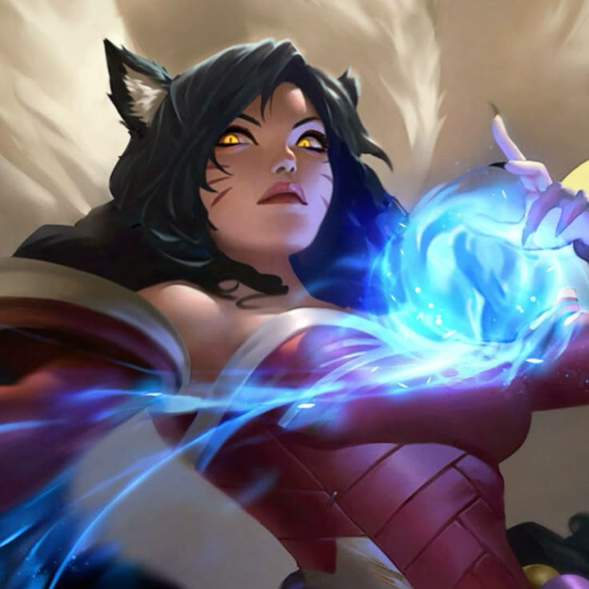
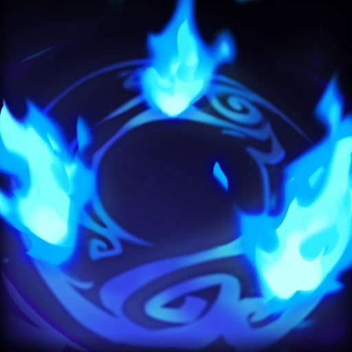
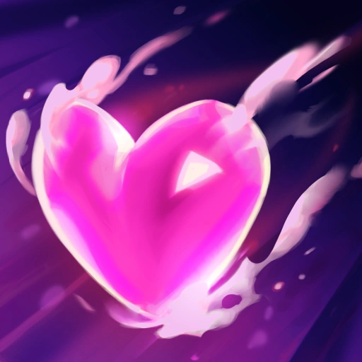
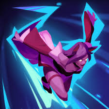

Ahri 💖

Who is Ahri?
Ahri is a magical Vastaya fox from League of Legends known for her charm, speed, and ability to manipulate emotions and essence through magic.
Lore
Ahri was once a wild, fox-like creature in the forests of Ionia. She had no understanding of human emotions and survived by absorbing life essence from others.
After experiencing human memories through her victims, she began to feel guilt and curiosity. This transformation slowly awakened her sense of identity and morality.
Now, Ahri travels Runeterra seeking redemption and understanding. She struggles between her natural instinct to consume life essence and her desire to live as something more human.
Ahri Highlights ✨
Pro Ahri Plays 💖
Personality
Ahri is elegant, curious, and emotional. She is kind-hearted but often struggles with her instincts. She values memories and connections deeply, as they remind her of her humanity.
Abilities
-

Orb of Deception: Sends out and pulls back an orb that deals magic damage and heals Ahri. -

Fox-Fire: Releases floating flames that automatically target nearby enemies. -

Charm: Blows a kiss that charms enemies, making them walk toward Ahri. -

Spirit Rush: Dashes multiple times, firing essence bolts at nearby enemies.